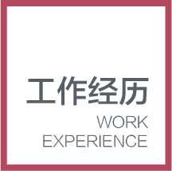

个
人
简
历
PERSONAL RESUME
姓 名：
性 别：
出生年月：
籍 贯：
毕业院校：
专 业：
电 话：
QQ：
微信：
武光顺
男
1988年3月1日
河北 邯郸
邯郸职业技术学院
计算机专业
15711011929
404762630
chuaye1172
精通HTML/CSS等前端技术，能轻松写出符合W3C标准、兼容主流浏览器的代码
熟悉ajax/xml/json等网络通信技术和数据交换格式
熟练使用JQuery、Bootstrap、swiper、iscroll、zepto等框架
熟练切图，将UI设计转化为符合W3C规范的DIV+CSS静态页面

1
2
3
2014/3－至今
2013/2－2014/2
2010/8－2012/12
2014/3－至今
北京诚联永创科技有限公司
前端开发工程师
2013/2－2014/2
北京诚联永创科技有限公司
桌面运维
2010/8－2012/12
北京国风视讯科技有限公司
桌面技术支持
我是一个有着坦诚、踏实的性格，做事情有耐心，有责任心，有团队意识的人。 我期望：面对自己的工作，用我的所有热情和智慧全力去开拓、耕耘。我坚信：有付出不一定有回报，但不付出一定没有回报。不断努力必然能不断战胜自己、超越自己，逐步走向成功!